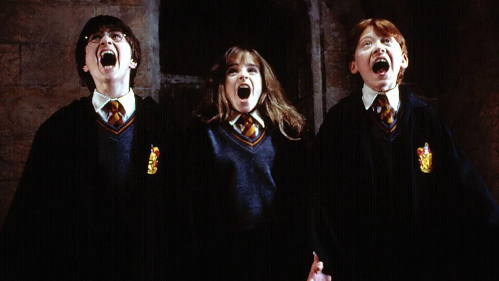
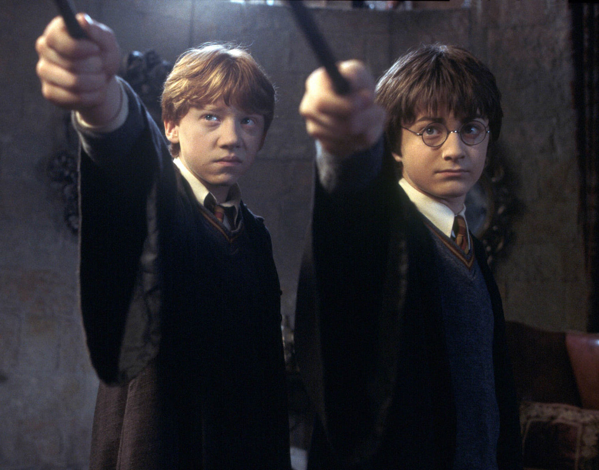

Harry Potter Trilogy
Overview:
1. Harry Potter and the Sorcerer’s Stone (1997)
Harry discovers on his 11th birthday that he is a wizard and has been accepted to Hogwarts School of Witchcraft and Wizardry. There, he makes new friends and learns about his mysterious past, including the truth behind his parents' death. Harry faces the dark wizard Voldemort for the first time when he seeks the powerful Sorcerer's Stone.
2. Harry Potter and the Chamber of Secrets (1998)
Back at Hogwarts for his second year, Harry encounters a new danger as students begin mysteriously turning to stone. He discovers that the Chamber of Secrets has been opened, unleashing a deadly creature. With the help of his friends Ron and Hermione, Harry uncovers the secret of the chamber and confronts the heir of Slytherin.
3. Harry Potter and the Prisoner of Azkaban (1999)

In Harry’s third year, he learns that Sirius Black, a dangerous criminal and alleged follower of Voldemort, has escaped from the notorious wizarding prison, Azkaban, and is believed to be after Harry. As Harry uncovers the truth about Sirius’s connection to his family, he learns shocking secrets about his past and the true story behind his parents' deaths.